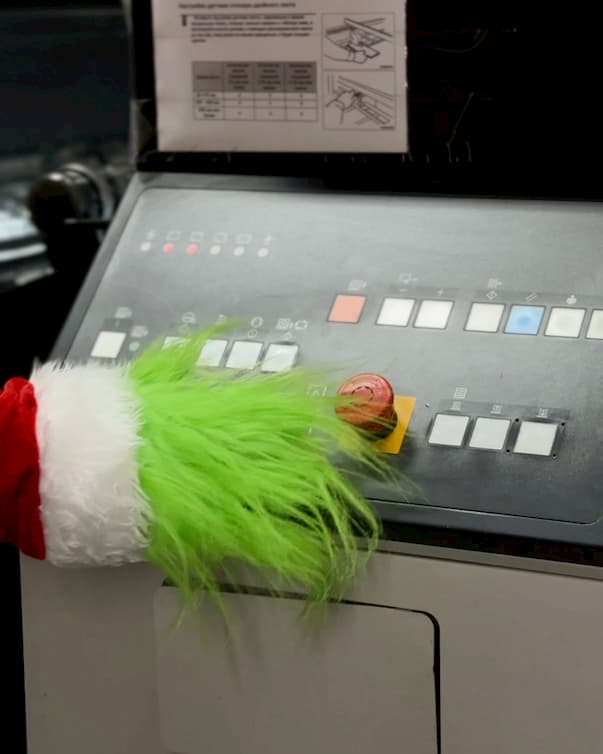

СРОЧНЫЙ ВЫПУСК! На типографию совершено нападение!

По нашим данным, вчера днем на объекте типографии Лазурь был замечен опасный нарушитель — мистер Гринч. Его целью, по всей видимости, является срыв предновогодних заказов.
Известные детали:
- Нарушитель: Гринч.
- Место преступления: Цех печати.
- Состояние: Ворчливое.
- Мотив: Предположительно, ненависть к празднику.
Наши сотрудники-эльфы делают всё возможное, чтобы обезвредить ситуацию и обеспечить выполнение заказов в срок. Приносим извинения за возможные задержки и сообщаем, что работа кипит, несмотря ни на что!
Ведётся поиск. Возможны следы зелёной шерсти на упаковке. Осторожно, ворчит!
